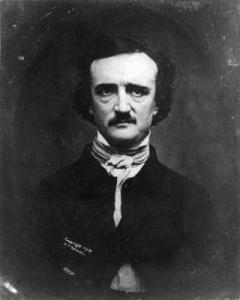

(A Descent into the Maelström)
Tanrının Doğadaki işleri de, kendi Varlığındaki işleri gibi, bizim işlerimize benzemez; bizim biçim verdiğimiz örnekleri, Onun yapıtlarının büyüklüğüne, derinliğine, araştırılmazlığına uydurmaya çalışmak boştur; Onun yapıtları Democritus'un kuyusundan bile daha derindir.
Joseph Glanville
En yüksek kayanın tepesine varmıştık. İhtiyar adam birkaç dakika sessiz durdu, konuşamayacak kadar bitkin görünüyordu.
"Çok eskiden değil," dedi sonunda, "birkaç yıl öncesine kadar, size bu yollarda, oğullarımın en küçüğü gibi hiç yorulmadan kılavuzluk edebilirdim; ama aşağı yukarı üç yıl önce başıma bir iş geldi, öyle bir iş ki daha hiçbir insanoğlunun başına gelmemiştir –ya da gelmiş olsa bile hiçbiri sağ kalmamış, gördüklerini anlatamamıştır–, o zaman dayandığım altı saatlik öldürücü bir korku bende ne vücut bıraktı, ne de ruh. Beni çok yaşlı bir adam sanıyorsunuz –ama değilim. Simsiyah saçlarımın böyle bembeyaz olması, kollarımın, bacaklarımın dermansızlaşması, sinirlerimin gevşemesi, bütün bunlar bir tek günü bile doldurmadan olup bitmiş şeyler; öyle ki şimdi biraz güç harcasam titremeye başlıyorum, bir gölge görsem korkuyorum. Şu küçücük uçuruma bile başım dönmeden bakamadığımı söylesem, inanır mısınız?"
"Küçücük uçurum" –dinlenmek için kendisini onun kıyısına öyle dikkatsizce atmıştı ki vücudunun daha ağır bölümü boşlukta duruyordu; ihtiyarı aşağı düşmekten koruyan, sadece ta uca, kaygan kıyıya dayamış olduğu dirseğiydi–, bu "küçük uçurum" aşağıdaki kayalık dünyadan, şöyle, beş yüz ya da altı yüz metre yükseklikte, pürüzsüz, kara kara parlayan, sarp bir uçurumdu. Yeryüzünde hiçbir şey beni onun kıyısına gitmeye zorlayamazdı, altı metre uzaklıktan daha yakına sokulmazdım. Yol arkadaşımın bu tehlikeli durumunu görünce öyle derin bir heyecana kapıldım ki yere boylu boyunca uzanıp çevremdeki çalılara sarıldım, gözlerimi gökyüzüne kaldırmaya cesaret edemedim –bir yandan da, kafama takılmış olan bir düşünceden, böylesine hızlı esen rüzgârın öfkesiyle dağın yerinden oynayacağı düşüncesinden kurtulmaya çabalıyordum. Oturup uzaklara bakacak kadar cesaret toplamam epeyce sürdü.
"Bu kuruntulardan kurtulmalısınız artık," dedi kılavuz, "çünkü sizi buraya getirmemin nedeni o söz ettiğim işin nerede başıma geldiğini göstermekti –olan biten her şeyi, böyle hepsi gözünüzün önündeyken anlatmak istiyordum."
"Biz şimdi," diye devam etti, kendine has tavrıyla konuşuyordu, "biz şimdi Norveç hududunun yakınlarındayız – altmış sekizinci enlem derecesinde – büyük Norland ilinde – ıssız Lofoden ilçesinde. Tepesinde oturduğumuz bu dağın adı Helseggen; yani Bulutlu. Şimdi şöyle biraz daha yukarı kalkın – başınız dönüyorsa otlara tutunun – şöyle – sonra şu aşağıdaki duman kuşağının üzerinden denize bakın."
Aptal aptal baktım, denizi geniş bir alanda görüyordum; suların rengi öyle karanlıktı ki, aklıma hemen Mare Tenebrarum üzerine yazılanlar geldi. Hayal edilemeyecek kadar ıssız bir görünüşü vardı; insanı acındıran bir ıssızlık. Korkunç derecede kara, sarp uçurumlar, dünyayı çevreleyen kaleler gibi, kıyı boyunca göz alabildiğine uzanıyor, ardı arkası kesilmez çığlıklar atarak, haykırarak gelen dalgaların beyaz köpükleriyle yıkanırken, karanlık renkleri daha güçlü beliriyordu. Durduğumuz yerin tam karşısında, beş altı mil uzakta, küçük, çıplak bir ada görünüyordu; ya da, daha iyisi, çevresini saran dalgaların birbirine karışıp durulmasından yeri belli oluyordu diyelim. Kıyıya ondan iki mil daha yakında, daha küçük, yalçın, ıssız, başka bir ada vardı; çevresinde yer yer kaya yığınları yükseliyordu.
Okyanusun uzaktaki adayla kıyı arasındaki bölümü bir tuhaftı. İçeri doğru sert bir rüzgâr esiyordu; engindeki bir yelkenli, gidişini çift kat camadana vurulmuş olan yan yelkenine bırakmış, sulara batıp çıkmaktaydı; ama okyanusun bu bölümünde belli bir kabarma, bir dalgalanma yoktu; sular çeşitli yönlere doğru kısa, hızlı, hırçın çırpınışlarla yayılıyordu –rüzgârın bir etkisi olmuyordu onlara. Kayaların çevresinden başka bir yerde de pek öyle köpüklenmiyorlardı.
"Şu uzaktaki adaya," dedi ihtiyar adam, "Norveçliler Vurrgh Adası derler. Şu aradaki de Moskoe'dir. Kuzeye doğru bir mil ötedeki: Ambaaren. Şu görünenler: Isleen, Hotholm, Keildhelm, Suarven, bir de Buckholm. Ta ötede –Moskoe ile Vurrgh arasında– Otterholm, Flimen, Sandflesen, Stockholm var. Adaları böyle işte –ama ne akla hizmet ederek onlara böyle birer ad takmışlar, orası anlaşılacak gibi değil. Bir şey işitiyor musunuz? Bir değişme görüyor musunuz sularda?"
Aşağı yukarı on dakikadır Helseggen dağının tepesindeydik; Lofoden'in içerlerinden doğru tırmanmıştık buraya, o yüzden de tepeye varmadan denizi görememiştik. İhtiyar adam konuşurken, gittikçe artmakta olan bir uğultu duymaya başladım; Amerika'nın çayırlarında büyük sürüler halinde dolaşan yabanıl mandaların çıkardığı gürültüye benziyordu; aynı anda, aşağıda kararsızca kıpırdanmakta olan suların kaşla göz arasında durumlarını değiştirip doğuya doğru akmaya başladıklarını gördüm. Ben orada öyle bakarken bile, akıntının hızı korkunç bir şekilde artmaktaydı. Her an biraz daha hızlanıyor –biraz daha büyüyordu. Beş dakika içinde, bütün deniz, ta Vurrgh'a kadar, ateş püsküren, çılgın bir insana döndü; ama asıl gürültü Moskoe ile kıyı arasındaki sulardan geliyordu. Bu suların geniş yatağı birbirine karşı koyan binlerce küçük akıntıya bölünüp parçalanıyordu, çılgınca bir sarsılışla kasılıyor –kabarıyor, kaynıyor, sesler çıkarıyor– sayısız su burgaçları yaparak, doğuya doğru, görülmemiş bir hızla akıyordu; çok yüksekten dökülen çağlayanlardan başka hiçbir yerde sular bu kadar hızla akamazdı.
Birkaç dakika sonra önemli bir değişiklik daha oldu. Suların üstü düzleşti, burgaçlar birer birer yok oldular; bu arada, önceleri hiç de köpüklü olmayan yerlerde uzunlamasına köpük çizgileri belirmeye başladı. Bu çizgiler, sonunda büyük bir alana yayılarak birleşti, yok olan burgaçların dönüşlerine uyan bir akışla, çok daha büyük bir burgaç biçimini aldı. Derken –birdenbire– bu yeni burgaç iyice belirdi, çapı bir milden fazla bir çember oluverdi. Çevresini geniş, pırıl pırıl bir su kuşağı sardı; ama bir tek damlası bile korkunç kuyunun içine gitmiyordu; kuyunun içi huni biçimindeydi, gözün görebildiği kadar yeri pürüzsüz, parlak, kapkara bir duvar gibiydi; ufka kırk beş derecelik bir açıyla kavuşuyor, iki yana doğru baygın baygın yaslanarak hızla dönüyor, rüzgârlara karşı korkunç bir ses çıkarıyordu; yarı çığlık, yarı kükreyiş gibi bir ses; öyle ki kudretli Niagara Çağlayanı bile, göklere karşı acısını böyle haykıramazdı.
Dağ kökünden sarsıldı, kayalar sallandı. Kendimi yüzükoyun yere attım, sinirden titreyen cılız otlara sarıldım.
"Bu," dedim, sonunda, ihtiyar adama, "bu büyük Maelström burgacından başka bir şey olamaz."
"Öyle diyenler de vardır adına," dedi. "Biz Norveçliler, Moskoe-ström deriz, ortadaki Moskoe adasından geliyor."
Bu burgaç üzerine okumuş olduğum şeyler beni gördüklerime hazırlamış değildi. Jonas Ramus'un yazdıkları, gerçi hepsini inceden inceye anlatır, ama bu sahnenin büyüklüğünü ya da korkunçluğunu duyurmaktan çok uzaktır –hele seyrederken insanı saran o yontulmamış şaşkınlık, yenilik duygusunu hiç veremez. Adı geçen yazar bu sulara nereden, ne zaman bakmış, bilmiyorum; ama bir fırtına sırasında, Helseggen tepesinden bakmamış olduğuna eminim. Anlattıkları, gerçeğin yanında çok güçsüz kalıyor; gene de bazı parçaları bilgi edinmek için okunabilir.
"Lofoden ile Moskoe arasında," diyor Jonas Ramus, "suyun derinliği otuz altı kulaçla kırk kulaç kadardır; ama öbür yanda, Ver'e (Vurrgh'a) doğru, bu derinlik azalır; o kadar azalır ki bir tekne, en iyi havada bile kayalara oturmak tehlikesini göze almadan oradan geçemez. Sular kabardığı zaman, akıntı Lofoden ile Moskoe arasından hızla içerilere doğru ilerler, büyük bir gürültü çıkarır; ama asıl denize karıştığı yerde duyulan kükreyiş müthiştir, en gürültücü, en korkunç çağlayanlar bile öyle bir ses çıkaramaz; o kükreyiş millerce uzaktan işitilir; burgaçlar ya da kuyular öylesine geniş, öylesine derindir ki kıyılarına bir gemi gelecek olsa, onu hemen içeri çeker, derinlere indirir, sonra dipteki kayalara çarpa çarpa paramparça ederler; sular durulunca geminin kalıntıları da yukarı çıkar. Ama bu durgunluk zamanları sadece suların yükselmeye ya da çekilmeye başlayacağı sırada, sakin havalarda görülebilir, o da on beş dakika ya sürer ya sürmez, arkasından hemen coşkunluk başlar. Akıntının gürültüsü çoğalınca, hele fırtına da varsa, bir Norveç mili uzaklıktan daha yakınına gitmek tehlikelidir. Kayıklar, yatlar, gemiler dikkatsizlik edip ona yaklaştıkları için dibini boylamışlardır. Sık sık balinaların da ona yaklaştığı, akıntıya kapılınca kurtulmaya çalıştıkları görülür, ama kurtulamazlar; kuyuların içine gitmemek için boşuna savaşırlarken nasıl inlediklerini, bağırdıklarını anlatmak olanaksızdır. Bir kere de Lofoden'den Moskoe'ye doğru yüzen bir ayı kapılmış bu akıntıya, dibe doğru çekildiğini görünce öyle korkunç sesler çıkarmış ki kıyıdakiler bile duymuşlar. Koca çam kütükleri o kuyuların içine düşünce paramparça çıkarlar, sanki üstlerini kıl bürümüş gibi lif lif olurlar. Bu açıkça dipte sivri kayaların varlığını, kütüklerin onların arasında, sağa sola savrulmuş olduğunu gösterir. Akıntıyı denizin kabarıp çekilmesi ayarlamaktadır –sular, düzenli bir biçimde, altı saatlik aralarla alçalıp yükselir. 1645 yılında, papazların Sexagessima dedikleri Pazar gününün sabahında, erkenden, sular öyle müthiş bir gürültüyle coşup kabardı ki kıyıdaki evler yıkıldı."
Suyun derinliğini nereden anlamış, bilmiyorum, burgacın yakınında böyle bir ölçme işine girişmek olacak şey değil. Bu "kırk kulaç" Moskoe'ya ya da Lofoden'e yakın bir yerde, kıyıda yapılan bir ölçmeyle bulunmuş gibi görünüyor. Moskoe-ström'ün ortasındaki derinlik, ölçülemeyecek kadar fazla olsa gerek; Helseggen'in en yüksek tepesinden o burgacın içine şöyle bir bakmak bile bunu kanıtlamaya yeter. Dağın üstünde durmuş, aşağıda, inleyerek, alev alev akan bu cehennem ırmağına bakarken, Sayın Jonas Ramus'un, tam bir saflık içinde, balinaların, ayıların başına gelenleri, sanki inanılmayacak şeylermiş gibi anlatışını düşünerek gülümsüyordum; en büyük gemilerin bile, bu ölüm akıntısına bir kere kapılınca kasırgaya tutulmuş tüye benzeyecekleri, hemen yok olup gidecekleri açıkça görülüyordu.
Bu inanılmaz doğa olayının nedenlerini anlatmaya çalışan yazılar gözümde bütün değerlerini yitirmişlerdi –oysa onlardan bazılarını ilk okuduğum zaman pek akla yakın bulmuş olduğumu hatırlıyorum. Genel olarak kabul edilen inanca bakarsanız, Faroe adalarının arasındaki öbür üç daha küçük burgaç gibi, bu burgacı yaratan "neden de suların alçalıp yükselmesinden başka bir şey değildir; dalgalar kabarırken kayaların, setlerin üzerinden aşıyor, sonra geri çekilmeleri gerekince, bir çağlayan gibi, aşağı doğru dökülmeye başlıyorlar; sular ne kadar yükselmişse bu dökülme de o kadar yüksekten oluyor; su burgacı, işte, bütün bu olayların doğal bir sonucudur; emme, içeri çekme gücü ise birçok denemelerle anlaşılmış bulunuyor." –Bunlar Encyclopaedia Britannica'nın sözleri. Kircher ile daha birkaç kişi de, Maelström Boğazının tam orta yerinde, dünyayı delip geçen bir kuyu, bir uçurum olduğunu düşlerler, bu deliğin öbür ucu çok uzaklardaymış –Bothnia burgacında olduğunu söyleyenler de vardır. Dağın tepesinde durmuş aşağılara bakarken aklıma bu düşünce geldi, gerçi saçmaydı, ama nerdeyse inanacaktım; kılavuza da anlattım; o zaten biliyormuş. Norveçlilerin pek çoğunun bu masala inanmakta olduğunu, kendisinin ise inanmadığını söyleyerek beni bayağı şaşırttı. Öbür açıklama biçimine gelince, onu bir türlü aklının almadığını söylüyordu; doğrusu artık ben de öyle düşünüyordum –çünkü kâğıt üstünde ne kadar inandırıcı olursa olsun, bu uçurumdaki gürültünün arasında bütün o açıklamalar insana anlaşılmaz, saçma şeylermiş gibi geliyordu.
"Artık iyice gördünüz nasıl döndüğünü suların," dedi ihtiyar adam, "şu kayanın arkasına geçin, orası kuytudur, suyun gürültüsünü keser biraz; size bir öykü anlatacağım, öyle sanıyorum ki onu dinledikten sonra Moskoe-ström üzerine epeyce bir şeyler bildiğimi anlayacaksınız."
Dediği yere geçtim, o devam etti.
"İki erkek kardeşimle benim çift direkli bir yelkenlimiz vardı, büyük bir balıkçı kayığı, aşağı yukarı yetmiş ton yük alırdı; Moskoe'nin ötesindeki adaların arasında, Vurrgh'un oralarda avlanırdık. Denizdeki bütün böyle güçlü burgaçlarda iyi balık çıkar, uygun zamanlarını bilmek, biraz da cesur olmak yeter; ama Lofoden kıyılarında yaşayanlar arasında sadece biz, üçümüz, anlattığım gibi, o adaların oraya gidip avlanmayı iş edinmiştik. Herkesin gittiği balık tarlaları güneyde, çok daha aşağılardadır. Orada her saat balık tutulabilir, bir tehlikesi de yoktur, onun için hep oraya giderler. Ama burada, bu kayaların arasında öyle yerler vardır ki, hem iyi, hem de bol ürün verir; biz, bir gün içinde, korkak balıkçıların bir haftada toplayacağından daha fazla balık çıkarırdık. Doğrusu tehlikeli bir oyun haline getirmiştik bunu –işgücü yerine hayatımızı koyuyor, korkusuzluğumuzu da sermaye olarak kullanıyorduk.
"Kayığımız kıyının aşağı yukarı beş mil yukarısındaki bir koyda dururdu; hava iyi oldu mu, on beş dakikalık durgunluğunu kollayıp Moskoe-ström'ü geçiverirdik, sonra Otterholm ya da Sandflesen yakınlarında bir yerde demirlerdik, oralarda, su çevrileri, başka yerlerdekine oranla daha güçsüzdür. Suların tekrar durulacağı zamana kadar, demirlediğimiz yerde avlanıp kayığı iyice doldurur, geri dönmeye hazırlanırdık. Gidip gelmemizi sağlayacak, yandan esen, devamlı bir rüzgâr olmazsa yola çıkmazdık –biz geri dönene kadar kesilmemesi gerekirdi– hani bu noktada yanıldığımız da pek az görülmüştür. Altı yıl boyunca, sadece iki kere, buralarda pek alışılmamış olan ölü havalar yüzünden, geceyi açıkta, demirli geçirmek zorunda kaldık; bir keresinde de tam bir hafta adaların ötesinden dönemedikti, açlıktan ölecektik az daha; tam akıntıyı geçip her zamanki yerlerimizden birinde demirlediğimiz sırada güçlü bir rüzgâr çıkarak suları kabartmış, dönüş yolumuzu kapatıvermişti. Bu durumda hepimiz denizin dibini boylardık, ne yapsak kurtaramazdık kendimizi (çünkü bulunduğumuz yerdeki su çevrileri de azmıştı, oradan oraya savruluyorduk, sonunda demirimiz de taramaya başlayınca, tamam oldu), ama talihimiz varmış –arada bir ortaya çıkıp sonradan kaybolan– sayısız küçük akıntılardan biri, bizi aldığı gibi, Flimen Adasının arkasına, rüzgârsız, kuytu bir yere atıverdi; kurtulduk.
"Size, altı yıl boyunca, bu bereketli 'balık tarlasında' karşılaştığımız bütün zorlukları anlatamam –iyi havalarda bile bin türlü tehlikesi olan kötü bir yerdir– ama Moskoe-ström'ün üzerinden geçerken hiç kazaya uğradığımız olmamıştı, o işi yağdan kıl çeker gibi başarırdık doğrusu; gene de akıntıya suların durulmasından bir dakika önce girdik mi ya da çıkarken bir dakika geciktik mi, yüreğim ağzıma gelirdi. Bazen rüzgâr, yola çıkarken hesapladığımız kadar sert esmezdi, istediğimiz hızla gidemezdik, bir yandan da sular kayığın yönetimini elimizden almaya çalışırdı, epeyce korku çekerdik. Büyük ağabeyimin on sekiz yaşında bir oğlu, benim de sağlam yapılı iki erkek çocuğum vardı. Onların böyle zamanlarda bize çok yardımları dokunabilirdi, hızımızı artırmak için kürek çekerler, balık tutarken de işimize yararlardı – ama kendimiz her şeyi göze almış olduğumuz halde, bu gençleri tehlikeye atmaya bir türlü gönlümüz razı olmuyordu –çünkü şunu da söylemek gerek, giriştiğimiz iş korkunç derecede tehlikeliydi, bu bir gerçek.
"Size anlatacağım şeylerin üzerinden epeyce zaman geçti, birkaç gün sonra tam üç yıl olacak. 18.. yılında, temmuzun onuncu günüydü; dünyanın bu yanında yaşayan insanlar hiçbir zaman unutamazlar o günü –çünkü göklerden kopup gelen kasırgaların en korkuncu, o gün kasıp kavurmuştu buraları. Üstelik o sabah, hatta öğleden sonra geç vakitlere kadar, güneyden doğru, tatlı, devamlı bir meltem esmişti, güneş pırıl pırıldı, öyle ki aramızdaki en yaşlı denizciler bile arkadan gelecek olan fırtınanın farkına varamamışlardı.
"Üçümüz –iki erkek kardeşimle ben– öğleden sonra saat ikiye doğru adaların oraya gitmiş, kısa zamanda kayığı balıkla doldurmuştuk; denizde o güne kadar görmediğimiz derecede bol av vardı. Tam yedide, saatime bakmıştım, iyice yükümüzü alıp geri dönmek üzere yola çıktık; akıntının en şiddetli yerini sular durulmuşken geçmek istiyorduk, yani saat sekizde.
"Sancaktan doğru esmeye başlayan taze bir rüzgârla, bir zaman dalgaları yara yara hızla ilerledik; bir tehlikeyle karşılaşacağımız aklımıza bile gelmiyordu; çünkü gerçekten de böyle bir şey düşünmemiz için en basit bir neden yoktu. Derken, birdenbire, Helseggen üzerinden kopup gelen bir rüzgârla geri savrulduk. Bu olağanüstü bir şeydi –hiç böylesi gelmemişti başımıza– nedenini kestiremediğim bir sıkıntı duymaya başladım. Kayığı rüzgâra ayarladık, ama bir türlü ilerleyemiyorduk; tam demir aldığımız yere dönmeyi önereceğim sırada, bir de arkamıza baktık ki, bütün ufuk, insanı şaşırtan bir hızla yükselen bakır rengi bir bulutla, boydan boya örtülmüş.
"Bu arada yolumuzu kesen sağnak geçip gitti, olduğumuz yerde, rüzgârsız, kalakaldık. Bütün bu işler bize düşünmek fırsatı verecek kadar uzun sürmedi. Bir dakika içinde fırtına çevremizi sarıverdi –daha ikinci dakika dolmadan gökyüzü büsbütün kapanmıştı– bulutların, savrulan suların altında, her yer o kadar karardı ki kayıkta birbirimizi göremez olduk.
"O kasırgayı anlatmaya çalışmak aptallıktır. Norveç'in en yaşlı denizcileri bile öyle bir şey görmüş değillerdi. Bir acele yelkenleri çözmüştük; ama daha ilk üfleyişinde, iki direği de diplerinden testereyle kesilmiş gibi alıp götürüverdi –ana direkle birlikte, dalgalara kapılmamak için kendini ona bağlamış olan küçük kardeşim de gitti.
"Kayığımız görülmemiş derecede hafifti. Güvertesi dümdüzdü, sadece pruvada, önde, küçük bir ambar kapağı vardı, Ström'ü geçerken denizin oynaklığına karşı bir önlem olarak bu kapağı kapardık. Eğer öyle olmasaydı yüzde yüz batmıştık –çünkü bir zaman suların içinde gömülü kaldık. Ağabeyim dalgaların altından nasıl sağ çıktı, bilmiyorum, bunu sorup öğrenecek fırsatı hiçbir zaman ele geçiremedim. Bana gelince, ön yelkeni çözer çözmez kendimi yüzükoyun güvertenin üstüne attım, ayaklarımı pruvanın dar küpeştesine dayamış, ellerimle de ön direğin dibindeki demir halkaya tutunmuştum. Beni bütün bunları yapmaya zorlayan sadece bir içgüdüydü –doğrusu, yapabileceğim en iyi hareketleri de yapmıştım– yoksa şaşkınlıktan düşünecek halde değildim.
"Dediğim gibi, bir zaman bütün bütün suyun içinde kaldık, nefesimi tutup demir halkaya sıkıca sarıldım. Havasızlığa dayanamayacağımı anlayınca, halkayı bırakmadan dizlerimin üzerinde doğruldum, böylece kafam suyun dışına çıktı. O sırada küçük kayığımız, tıpkı ıslak bir köpeğin yaptığı gibi şöyle bir titreyerek kendini sulardan kurtardı. Şaşkınlığımı geçiştirip, ne yapmam gerektiğini anlamak için duyularımı toparlamaya çalışırken, birinin koluma sarıldığını hissettim. Ağabeyimdi, ta içimden gelen bir sevinçle yüreğim ferahladı, onun denize düştüğünü sanıyordum –ama bir an sonra bu sevinç korkuya döndü– çünkü ağzını kulağıma yaklaştırmış, şu kelimeyi haykırmıştı – 'Moskoe-ström!'
"O anda neler hissettiğimi kimseler bilemez. Müthiş bir sıtma nöbetine tutulmuş gibi, tepeden tırnağa titredim. Bu tek kelimeyle ne demek istediğini iyice biliyordum –anlatmak istediği şeyi biliyordum. Önünde sürüklendiğimiz rüzgârla, Ström'ün burgacına doğru gidiyorduk, hiçbir şey kurtaramazdı bizi artık!
"Belki sözlerimden anlamışsınızdır, akıntının yatağından geçeceğimiz zaman, hava iyi bile olsa burgacın çok yukarılarına gider, sonra da, işte, orada, suların durulmasını beklerdik –ama bu kez doğru kuyunun üstüne gidiyorduk, hem de öyle bir kasırgada! 'Herhalde' diye düşündüm, 'tam suların durulduğu zamanda varacağız oraya –gene bir umuttur bu' –ama bir an geçince böyle bir umut beslemek aptallığına kapıldığım için kendime sövdüm. Sonumuz gelmişti, biliyordum; doksan toplu gemilerin on katı büyüklükte bile olsak, gene de kurtulamazdık bundan.
"Bu sırada fırtınanın ilk hızı geçmişti; ya da onun önüne katılmış sürüklenmekte olduğumuz için biz eskisi kadar farkına varmıyorduk; ama gene de bir değişiklik vardı, önce rüzgârın önünde sinmiş olan, köpüklene köpüklene dümdüz uzanan sular, dağlar gibi yükselmeye başlamıştı. Göklerde de bir değişiklik olmuştu. Gerçi her yan gene eskisi gibi katran rengindeydi, ama tepeye yakın bir yerde, birdenbire, yuvarlak, tertemiz bir gök parçası biçimlenmişti –hiç görmediğim kadar temiz– parlak, koyu bir mavi –ve oradan, bulutların arasından, testekerlek bir ay ışıklarını saçmaya başlamıştı; onun böylesine göz kamaştırıcı bir parlaklığı, bir güzelliği olduğunu bilemezdim. Çevremizdeki her şeyi iyice aydınlatıyordu –ama, ah Tanrım, ne aydınlatılacak bir görünümdü bu!
"Bir iki kere ağabeyimle konuşmaya davrandım –ama, ne olmuşsa olmuş, gürültü o kadar artmıştı ki kulağının içine avazım çıktığı kadar bağırdığım halde, tek kelime bile duyuramadım. O sırada ağabeyim başını salladı –yüzünü bir ölüm solukluğu kaplamıştı– 'dinle!' der gibi, parmaklarından birini kaldırdı.
"Önce, ne demek istediğini, ne anlatmaya çalıştığını kestiremedim –derken, korkunç bir düşünce çaktı beynimde. Saatimi cebimden çıkardım. İşlemiyordu. Ay ışığında baktım, sonra onu denize fırlatırken gözlerimden yaşlar boşandı. Tam yedide durmuştu! O yüzden suların durgunluk zamanını geçirmiştik, Ström'ün burgacı hızını almış olmalıydı!
"Bir kayık iyi yapılmış, dengesi iyi kurulmuş olursa, yükü de çok değilse, güçlü bir rüzgârla, pupasına giderken, dalgalar altından kayı kayıverir –toprak insanları pek şaşarlar buna– işte denizcilik dilinde bu gidişe sekmek deniyor.
"O ana kadar dalgaların üzerinden sekerek ilerlemiştik; derken dev gibi bir dalga bizi arkadan doğru kavradığı gibi yukarı kaldırıverdi – yukarı – yukarı – sanki gökyüzüne çıktık. Bir dalganın bu kadar yükselebileceğine taş çatlasa inanmazdım. Sonra sürüklenip kayarak alçaldık, midem bulandı, sersemledim, sanki bir düşte çok yüksek bir dağın tepesinden düşmüş gibi oldum. Ama tam yukardayken çevreme şöyle bir göz atmıştım –bu kısacık bakış yetti bana. Bir an içinde nerede olduğumuzu kestirdim. Moskoe-ström'ün burgacı, bir milin ancak dörtte biri kadar uzağımızdaydı –ama, o günkü hali, her zamanki Moskoe-ström'e, şu gördüğümüz akıntının, bir değirmeni döndüren suların akıntısına benzediğinden daha fazla benzemiyordu. Nerede olduğumuzu, ne ile karşılaşacağımızı bilmeseydim, onu tanıyamazdım bile. Gözlerim korkuyla kendiliklerinden kapanıverdi. Gözkapaklarım kasılarak birbirine kenetlenmişti.
"İki dakika geçmeden, dalgaların yarıldığını, her yanımızı köpüklerin sardığını gördük. Kayık, iskelesine doğru keskin bir yarım dönüş yaparak şimşek gibi ileri atıldı. O anda suların gürültüsü tiz bir çığlık içinde boğuldu –sanki binlerce buharlı gemi bir araya gelmiş, hep birlikte düdüklerini çalmaya başlamışlardı. Burgacın çevresini saran köpük kuşağının içindeydik; bir an sonra boşluğa yuvarlanacağımızı düşündüm; akla sığmayacak bir hızla sürüklendiğimiz için, tam kıyısında olduğumuz kuyunun derinliğini doğru dürüst göremiyorduk. Kayık suya bütün bütün gömülmüş değildi, bir hava kabarcığı gibi dalgaların üzerinde akıp gidiyordu. Burgaç sancak tarafımızdaydı, iskele tarafımızda ise okyanusun suları yükseliyordu. Bu sular ufukla bizim aramıza çekilmiş, durmadan dönen büyük bir duvar gibiydi.
"Belki tuhaf görünecek ama burgacın kıyısında, önceki halime oranla kendimi çok daha sakinlemiş hissediyordum. Artık bir umudum kalmadığı için aklımı başımdan alan korkuların birçoğundan kurtulmuştum. Önceleri sinirlerimin o kadar gerilmesine içimde beslediğim boş umutlar neden olmuştu.
"Şimdi siz övündüğümü sanacaksınız –ama doğruyu söylüyorum–; böyle ölmenin ne ulu bir şey olduğunu düşünmeye başlamıştım; Tanrının gücünü gösteren, böyle, eşi bulunmaz bir görünüm karşısında, benim kendi canımın derdine düşmüş olmam ne bayağıca, ne aptalca bir işti. Aklımdan bu düşünceler geçerken, utancımdan yüzüm kızarıyordu. Biraz sonra, içimde, burgaca karşı dayanılmaz bir merak uyandı. Onun derinliklerini görmek istiyordum, gerçi bu benim için ölüm demekti, ama aldırmıyordum; başlıca üzüntüm göreceğim şeyleri kıyıda yaşlı arkadaşlarıma hiçbir zaman anlatamayacak olmamdı. Bunlar, kuşkusuz, öyle bir durumda insanın aklını oyalamak için çok basit, çok garip şeylerdi –arada bir düşünürüm de kuyunun çevresinde dönüşümüz beni biraz sersemletmiş olacak.
"Buna karşılık başka bir olay da düşüncelerime düzen vermeye çalışıyordu; rüzgâr kesilmişti, daha doğrusu bulunduğumuz yere gelemiyordu –çünkü, siz de gördünüz, köpük kuşağı denizin yüzünden epeyce aşağıdadır, öyle olduğu için de okyanus üzerimizde kocaman, kara bir dağ gibi yükseliyordu. Eğer hiç denizde fırtınaya tutulmadınızsa rüzgârlarla savrulan suların, insanın kafasını nasıl karmakarışık ettiğini bilemezsiniz. Gözleriniz görmez, kulaklarınız duymaz olur, nefes alamazsınız, hareket edecek ya da düşünecek gücünüz kalmaz. İşte biz bunlardan kurtulmuştuk –tıpkı ölüm yargısı giymiş suçluların, cezaevlerinde biraz daha rahat hareket etmelerine, ufak tefek yasakları çiğnemelerine göz yumulması gibi.
"Kuşağın çevresini ne kadarda döndüğümüzü söyleyemeyeceğim, bilmiyorum. Belki bir saat, durmadan döndük, gittikçe köpük kuşağın ortasına, kuyunun korkunç kıyısına doğru yaklaşıyor, suların üzerinde âdeta uçuyorduk. Bütün bu işler olurken, demir halkayı hiç bırakmadım. Ağabeyim arkadaydı, güverteye sıkı sıkı bağlı olan küçük bir su fıçısına tutunuyordu, fırtınanın üstümüze inişiyle birlikte, güvertede o fıçıdan başka hiçbir şey kalmamıştı. Kuyunun ağzına yaklaştığımız sırada ağabeyim fıçıyı bırakıp demir halkaya uzandı, ama halkada ikimize de yetecek yer olmadığı için, korkusundan gelen bir acıyla kıvranarak benim ellerimi çözmeye çalıştı. Gerçi bu hareketi yaparken onun artık bir deli olduğunu –korkuyla aklını oynatmış, çıldırmış olduğunu– biliyordum, ama gene de içimde derin bir üzüntü duydum, hayatımda hiçbir zaman o kadar üzülmüş olduğumu hatırlamıyorum. Karşı koymadım. Halkaya onun tutunması ya da benim tutunmam, hiçbir şeyi değiştirecek değildi; demiri bırakıp arkaya, fıçının oraya gittim. Kayık hızını azaltıp çoğaltmadan, sadece burgacın geniş kıvrılışlarıyla ileri geri sallanarak dümdüz ilerlediği için, bu işi yapmam zor olmadı. Tam fıçıya tutunduğum sırada sancak tarafına doğru ani bir yalpa vurup boşluğa yuvarlandık. Hemen bir dua mırıldandım, her şey bitmişti artık.
"Düşüşün verdiği, insanın içini kaldıran bir duyguyla gözlerimi yummuş, fıçıya sıkı sıkı sarılmıştım. Saniyelerce, gözlerimi açmaya cesaret edemedim –bir anda öleceğimi sanmıştım, ama daha çevremi sular sarmamış, bir ölüm çekişmesi başlamamıştı. Saniyeler, saniyeler geçti. Hâlâ yaşıyordum. Düşüşün verdiği duygu da kesilmişti; kayığın hareketleri tıpkı köpük kuşağında olduğu gibiydi, sadece biraz daha yana yatmıştı. Cesaretimi toplayıp gözlerimi açtım.
"Çevreme bakarken duyduğum korkuyu, şaşkınlığı, hayranlığı hiçbir zaman unutamayacağım. Kayık geniş, derin bir huninin yuvarlak duvarında, tam orta yerde, sanki sihirlenmiş gibi asılıp kalmış, durmadan dönüyordu; insan o yuvarlak, pürüzsüz duvarı –öylesine şaşırtıcı bir hızla dönmese, pırıl pırıl ışıklar saçmasa– abanozdan yapılmış sanırdı; bulutların arasındaki yuvarlak açıklıktan görülen testekerlek ayın ışıkları kuyunun duvarlarına vuruyor, ta derinlere, en kuytu köşelere kadar uzanıyordu.
"Hiçbir şeyi doğru dürüst göremeyecek kadar şaşkın bir haldeydim. Gözüme sadece korkunç bir büyüklük, ululuk çarpmıştı. Biraz kendimi toparlayınca aşağılara doğru baktım. Kayığın suların üstündeki durumu, kuyunun dibini görmeme engel olmuyordu. Dümdüz bir çizgi üzerinde ilerliyorduk –yani güverte suyun yüzüne paraleldi– ama sular kırk beş dereceden fazla bir açıyla dibe doğru indikleri için, biz de yana yatmış gibi görünüyorduk. Şunu da söyleyeyim, o yatık durumda fıçıya tutunup durmak, suların yatay olduğu zamankine kıyasla, daha zor değildi; öyle sanıyorum ki bunun nedeni de hızla dönmekte oluşumuzdu.
"Ayın ışıkları sanki derin burgacın dibini araştırıyordu; ama gene de, aşağıdaki her şeyi saran kalın sis yüzünden oraları açık seçik göremiyordum; sisin üzerinde ise Müslümanların Zaman ile Sonsuzluğu bağlayan tek yol olduğunu söyledikleri daracık, oynak köprüye benzeyen, eşsiz bir gökkuşağı vardı. Bu sis ya da su damlacıkları, kuşkusuz, huninin büyük duvarlarının ta dipte birbirine çarpmasından doğuyordu –ama o sisin içinden göklere doğru yükselen gürültüyü anlatmaya cesaret edemeyeceğim.
"Tepedeki köpük kuşağından boşluğa ilk kayışımız, bizi epeyce aşağılara indirmişti; ama artık düşüşümüz o kadar hızlı olmuyordu. Durmadan dönüyor, dönüyorduk – öyle hiç değişmeyen, tek düzenli bir hareketle değil – kayığı bazen sadece birkaç yüz metre, bazen de burgacın bütün çevresi boyunca savuran – sersemletici sallanış ve sarsılışlarla dönüyorduk. Her dönüşle birlikte biraz daha aşağı iniyorduk, gerçi bu iniş pek yavaştı, ama iyice belli oluyordu.
"Üstünde böylece sürüklendiğimiz geniş, abanoz rengi sulara, çevreme bir baktım; burgacın içinde kayığımızdan başka şeyler de vardı. Hem üstümüzde, hem altımızda, gemi parçaları, koca koca kalaslar, ağaç kütükleri, kırık dökük ev eşyaları, kutular, küçük fıçılar, fıçı tahtaları görünüyordu. Korkularımın yerini almış olan tuhaf merakımı daha önce anlatmıştım. Ben ölümüme doğru yakınlaştıkça bu merakım da artıyordu sanki. Garip bir ilgi duyarak bizimle birlikte dönen şeylere bakıyordum. İyice aklımı oynatmış olmalıyım, çünkü onların aşağıdaki köpüklere doğru düşüş hızları arasında oranlamalar yapmaya çalışıyor, bundan kendime bir eğlence çıkarmaya uğraşıyordum. Derken bir baktım şöyle bir şeyler söylüyorum: 'Şimdi sıra şu çam ağacında, hepsinden önce o dalıp kaybolacak.' –ama bir Alman ticaret gemisinin kalıntıları onu geçip suların içinde daha önce yok olunca bayağı üzülüyordum. Sonunda, böyle birkaç oranlama yapıp hepsinde yanıldıktan sonra –bu olay– yani arkası arkasına hep yanılmış olmam kafama bir dizi düşünce getirdi; kollarım, bacaklarım yeniden titremeye, kalbim bir kere daha hızlı hızlı atmaya başladı.
"Beni böyle sarsan yeni bir korku değil, içimde bir umudun doğmasıydı. Bu umut yarı hatırlama gücümün, yarı da gördüğüm olayların etkisiyle oluşmuştu. Moskoe-ström'ün içine düşen, dışarı fırlatıldıktan sonra da, Lofoden kıyılarına vuran çeşitli şeyleri hatırlamıştım. Bunların çoğu paramparça olurdu –kuyunun dibinde öyle didiklenir, öyle hırpalanırlardı ki üst üste yapıştırılmış kıymık kümelerine dönerlerdi– ama buna karşılık, iyice hatırlıyorum, bazıları da hiç parçalanmaz, biçimleri bile bozulmazdı. Bu olayı şöyle açıklıyordum: parçalananlar kuyunun ta derinlerine inmiş, iyice yutulmuş olanlardı –öbürleri ise burgaca geç girmişlerdi ya da herhangi bir nedenle, girdikten sonra düşüşleri daha yavaş olmuştu; o yüzden de dibe kadar inmelerine kalmadan, suların değişme zamanı, durgunluk zamanı gelmişti. Her ikisi de olabilirdi; burgaca geç girmek ya da düşüş hızının azlığı, parçalanmadan suyun yüzüne çıkmaya neden olabilirdi. Bundan başka üç önemli şeye daha dikkat etmiştim. Birincisi: genel olarak, bir cisim ne kadar büyükse o kadar hızlı düşüyordu –ikincisi: aynı büyüklükteki iki cisimden biri küre biçiminde ise, öbürünün biçimi ne olursa olsun, küre daha hızlı düşüyordu –üçüncüsü: aynı büyüklükteki iki cisimden biri silindir biçiminde ise, öbürünün biçimi ne olursa olsun, silindir daha yavaş düşüyordu. Kurtuluşumdan sonra, kasabamızdaki ihtiyar bir öğretmenle, bu konu üzerinde, birkaç kere konuşmuştuk; 'silindir' ve 'küre' kelimelerini ondan öğrendim. Nasıl açıkladığını hatırlayamayacağım –ama bu gördüğüm şeylerin, yüzen cisimlerin biçimlerinden doğan doğal sonuçlar olduğunu söylemişti– sonra, bir burgaç içindeki silindirin, biçimleri başka olan eşit büyüklükteki cisimlere oranla neden emilmeye karşı daha fazla direnç gösterdiğini, neden daha zor aşağı indiğini de anlatmıştı.[2]
"Dikkatimi çeken o üç önemli şeyi iyice güçlendiren bir olay vardı ki, beni, onları göz önünde tutarak hemen harekete geçmeye zorluyordu; her dönüşümüzde, fıçı gibi ya da bir geminin sereni, ana direği gibi şeylerin yanından geçiyorduk; üstelik gözlerimi ilk açtığımda bizim düzeyimizde olan cisimlerin birçoğu da burgacın ta yukarılarında kalmışlardı, sanki hiç alçalmıyor gibiydiler.
"Artık yapacağımı biliyordum. Kendimi tutunmakta olduğum su fıçısına sıkı sıkıya bağlayacak, sonra da onu güverteden çözüp suların içine atılacaktım. Çeşitli işaretlerle ağabeyimin dikkatini üzerime çektim, yanımız sıra yüzen fıçıları gösterdim; ne yapmak istediğimi ona da anlatmak için elimden gelen çabayı harcadım. Sonunda niyetimi anladı sanıyorum –ama, her nedense, umutsuzca başını salladı, demir halkadan ayrılmayı kabul etmiyordu. Yanına gitmem olacak iş değildi; daha fazla gecikemezdim; böylece, acı bir iç çabalaması sonunda, onu yazgısına bıraktım; kendimi fıçıya bağladım –fıçıyı güverteye tutturan ipleri çözerek yapmıştım bu işi– sonra bir an bile duralamadan denize atıldım.
"Sonuç tam umduğum gibi çıktı. Bu öyküyü şimdi size ben anlattığıma göre –görüyorsunuz kurtulmuş bulunuyorum– kurtuluşumun ne yolda olduğunu da anlamışsınızdır artık, bundan sonra söyleyeceklerimi aşağı yukarı tahmin edebilirsiniz –onun için öykümü kısa keseceğim. Ben ayrıldıktan bir saat ya da ona yakın bir süre sonra dibe inen kayığımız birbiri ardına, hızla üç dört sert dönüş yaparak, sevgili ağabeyimle birlikte, tepe üstü aşağıdaki köpüklerin içine daldı. Bağlı olduğum fıçı, burgaçtaki büyük değişiklik başlayana kadar, kayıktan atladığım yerle kuyunun dibi arasındaki uzaklığın yarısını biraz geçmişti. Geniş huninin duvarlarındaki eğiklik gitgide azalıyordu. Dönüşünün hızı da gitgide hafiflemekteydi. Derece derece köpükler ile gökkuşağı yok oldu, burgacın dibi yavaş yavaş yükselmeye başladı. Gökyüzü açılmış, rüzgâr durulmuştu, batıda ay pırıl pırıl alçalıyordu; kendimi suların yüzünde buldum; çevreme baktım; orada, bulunduğum yerde, biraz önce Moskoe-ström'ün burgacı vardı. Durgunluk zamanıydı –ama deniz, kasırganın etkisiyle, hâlâ, dağ gibi dalgalarla kabarıyordu. Ström'ün akıntısına kapılmıştım, beş dakika içinde, kıyı boyunca akarak balık 'tarlalarının' oraya geliverdim. Bir kayığa aldılar beni –yorgunluktan bitkindim– üstelik (artık tehlike de geçmiş olduğu için) başıma gelenleri hatırlamanın yarattığı bir korkuyla dilim de tutulmuştu. Beni güverteye çıkaranlar eski dostlarım, her günkü arkadaşlarımdı –ama sanki cinler âleminden gelen bir yolcuymuşum gibi, kim olduğumu bilemediler. Bir gün önce karga kanadı gibi simsiyah olan saçlarım, şu anda gördüğünüz kadar beyazlaşmıştı. Yüzümdeki ifadenin de büsbütün değişmiş olduğunu söylüyorlar. Bu öyküyü anlattım onlara –inanmadılar. Şimdi de size anlatıyorum –ama bütün bunların doğruluğuna, Loforden'in şakacı balıkçılarından daha fazla bir inanç besleyeceğinizi de pek ummuyorum."